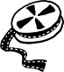

"Tüm eserleriniz arasında edebi olanlar hangileridir?" sorusuna şöyle cevap vermişti Ahmed Midhat: "Ben edebi sayılabilecek hiçbir eser yazmadım. Çünkü benim eserlerimin çoğunu yazdığım sıralarda, memlekette edebiyattan anlamayanlar nüfusumuzun bila-mübalağa yüzde doksanını teşkil ediyordu. Benim emelim de ekseriya, ekseriyete hitap etmek, onları tenvire; onların dertlerine tercüman olmaya çalışmaktır. Zaten edebiyat yapmağa ne vaktim, ne de kendim müsait değildi." "Edebiyat yapmaya" müsait olmayan bir ortamda gene de yazılan, yazılabilen romanlar, özünde ve son tahlilde muhakkak öğretici, aydınlatıcı olmalıydı Ahmed Midhat'a göre. Mesele öncelikle okuru bilinçlendirmek olunca, romanların kurguları ve karakterleri de ona göre değişiyordu haliyle. Vaktiyle, "Avrupa görmüş adam" başlı başına bir iltifattı Türkiye'de. Avrupa görenlerin halleri bir başka oluyordu. İncelip de dönüyorlardı oradan; incelmek, "eksilmek" anlamına gelmiyordu. Gerçi öyle herkes gidemiyordu Batı'ya, gidemiyordu ama gitmeden de gitmiş kadar, görmeden de görmüş kadar olmak mümkündü. Nasıl mı? Romanlar sayesinde.
Okurlarını "Avrupa görmüş adam" seviyesine yükseltebilmek amacıyla Avrupa'da geçen hikâyeler kaleme aldı Ahmed Midhat. Unutmamak gerekir ki öncelikli olarak seçtiği okur kitlesi, kendisine biçtiği misyonla bağlantılı olarak, geniş halk kesimleriydi. Okuma yazmayı yeni yeni öğrenenler, ancak kısıtlı bir eğitim rahlesinden geçebilenler, yazarın elinden çıkan bu kolay ve sığ, eğlendirici ve öğretici kitaplar aracılığıyla ziyarette bulunabileceklerdi ötekinin toprağına, Batı'ya.
Avrupa'yı hepimize gösterebilmenin bir yolu, içimizden birini oraya göndermekti, Ahmed Midhat da öyle yaptı Paris'te Bir Türk adlı kitabında. Bir gün romanın misyonunu sinema aldığında, Küçük Hanım'ı Paris'e göndererek aynı kalıbı büyük bir şevkle tekrarlayıp duracaktı Türk sineması, ama şimdi daha çok zaman vardı o yıllara. Belgin Doruk, Hülya Koçyiğit... hep gidip de değişmek, tanınmayacak kadar değişmek üzere gittiler Avrupa'ya o filmlerde. Romancılığımızın aksine erkekleri değil kadınları gönderdi Avrupa'ya Türk filmleri. Ama Ahmed Midhat'ın yazdığı dönemde daha çok vardı o günlere. Erken dönem Türk modernleşmesi süregiderken, erkek karakterler gidiyordu Avrupa'ya; gidip de değişmek üzere değil gidip de onları değiştirmek üzere.
Paris'te Bir Türk adlı kitapta bu kahraman Nasuh'tan başkası değildir. Halkın gözleridir Nasuh. Eğitimsiz okurlar onun aracılığıyla bakacaklardır Batı'ya, Batılılara. Tahmini okurların eğitim düzeyi ne denli düşükse, Nasuh'unki de o kadar yüksektir. Batı'nın da Doğu'nun da türlü türlü hallerine ve bilgi kanallarına vakıf olduğundan, Fransızca, Arapça ve Farsça bildiği gibi, bilime, bilimselliğe, teknolojiye açık tutar zihninin kapılarını. Nasuh'un temel amacı dönüşmekten ziyade dönüştürmek olunca, tüm kitap boyunca uzun konuşmalar yapar karşılaştığı tüm Batılılarla. Gerçek İslam'ı, gerçek Doğu'yu, gerçekleri anlatır onlara. Bu konuda öylesine başarılıdır ki, Parisli bir genç kızı Müslüman yapar sonunda. İkna edemedikleri de vardır tabii. Türkleri hakir gören bir İngiliz vardır mesela, ama onu da sonunda gölde boğulmaktan kurtarır.
Romanların ve filmlerin karakterleri aracılığıyla görmeden görmüş, bilmeden bilmiş kadar olduk "öteki"nin diyarını. Ardından yeni bir safha geldi kitlesel iletişim aygıtlarının da devreye girmesiyle. Şimdi artık kurgusal karakterler değil, hakikileri boy gösteriyor ekranlarda, radyolarda, basında. Onlar aracılığıyla dinliyoruz o hiç bilmediğimiz "öteki"ni.
Amerika'da muhafazakâr televizyon ve radyo kanallarında, Müslüman doğup bir müddet "gaflet" içinde yaşadıktan sonra Hıristiyanlığı seçen kişilere yer veriliyor bu aralar sıklıkla. İslamiyet hakkında pek fazla bilgisi olmayan sunucular, İslamiyet hakkında zerre kadar bilgisi olmayan dinleyicileri, "eskiden öteki saflarda olup da şimdi bize katılan"ın ağzından aydınlatabiliyor böylelikle. "Peki, ailen seni oruç tutmaya zorlar mıydı?" diyor spiker. "Gerçekten karılarınızı dövebilirsiniz diyor mu Kuran'da?" "Peki, babanın kaç karısı vardı?"... sorular zincirleme uzarken, eskiden Müslüman şimdi Hıristiyan olan şevkle yakınıyor geçmişinden. O karaladıkça eski kimliğini, dinleyiciler de daha rahat inanıyorlar kendi haklılıklarına, zaten sahip oldukları yargıların doğruluğuna.
Bugün Amerikan basın kanallarında din-değiştirmiş-Müslümanlara gösterilen ilgiden çok da farklı değil aslında, Türkiye'de süregiden "ötekini yanına çekme gayreti." Çünkü Hıristiyan muhafazakârlara özgü değil, hakkında bir tek önyargısız satır okuma zahmetine girişmedikleri bir dini, oradan dönenin ağzından dinleme eğilimi. Mesele sadece dinle de sınırlı değil. Vaktiyle "öteki"nden olup da şimdi "biz"e katılan herkesi sevmeye hazırız şu veya bu biçimde. Din değiştirip Müslüman olmuş Hıristiyanlara, Türkiye'ye yerleşen yabancılara, her sene sektirmeden tatillerini burada geçiren turistlere ve bilhassa, Türklerle evlenip, çocuklarına Türkçe isimler koymayı kabullenmiş Batılı gelinlere vakfedilmiş ayrıcalıklı sevgimizden bol bol nasiplenebilirler, yeter ki bizi bize yankılasın, bize kendi haklılığımızı kanıtlasınlar.
Bilmeden bilmiş, görmeden görmüş kadar oluyor taraflar salt kendi bildiklerini, kendi görmek istediklerini. Kalınlaşıyor duvarlar, ağırlaşıyor, sağırlaşıyor. Umutsuzlaşıyor.
Boston